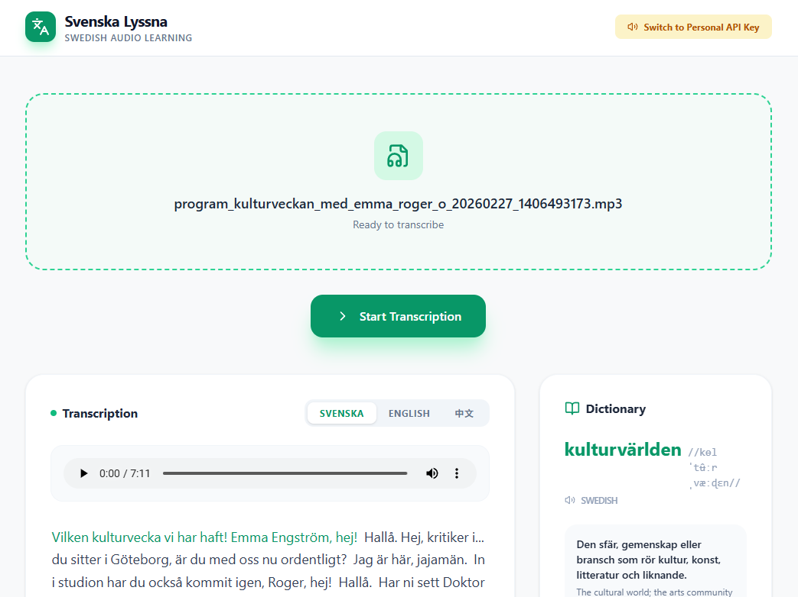

HCID KTH×Aalto
Psychology×Design ZJU
Ericsson
Asta.AI
Furhat Robotics
Svenska Lyssna
SvenskaKompis
CineGlobe
MoLeMe
Cinema Cover Generator
WomenWise(Hackathon 2nd)
laile(Music)
FitPlan
ClimbLog
SOLARIS
SongGuo AI
Bamboo Shelter
EcoCan
SJ Access
LiCai+
MyWay
BrailleSticker
Working Memory
AR Projection
East Meets West
Cannes Viz
ZJU RPG
Winter Swimming
Metay
Club Poster #1
Club Poster #2
House of Sand
Timbuktu
Notes Underground
Blessing
Farewell Concubine
Concubine Cover
Tie in Tides
Printmaking
Your Life #1
Your Life #2
Your Life #3
Ballroom Workshop
Film Festival Reporter
Voguing

Education
Education
Internship
Internship
Internship
AI Product
AI Product
AI Product
AI Product
AI Product
AI Workflow
AI Generative
AI×Full-stack
Full-stack
Full-stack×Autoflow
HCI×AI
HCI×Architecture
UX Design
UX Design
UX Design
HCI Research
HCI Research
HCI Research
Psy. Research
Psy. Research
Visualization
Game Design
Book Design
3D Design
Graphic Design
Graphic Design
Graphic Design
Graphic Design
Graphic Design
Graphic Design
Graphic Design
Graphic Design
Graphic Design
Graphic Design
Graphic Design
Graphic Design
Graphic Design
Graphic Design
Hobby
Hobby
Lesley Gu
I engineer AI-forward, accessible systems that resonate across diverse human experiences. I blend a filmmaker's storytelling with a dancer's heightened sensitivity to ensure the future of tech is not just smart, but fundamentally human-centric.